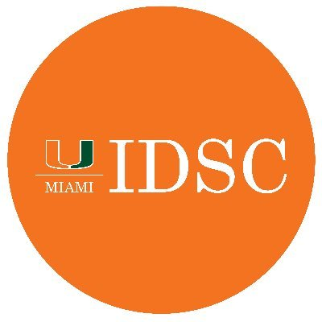
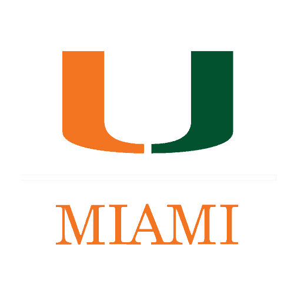
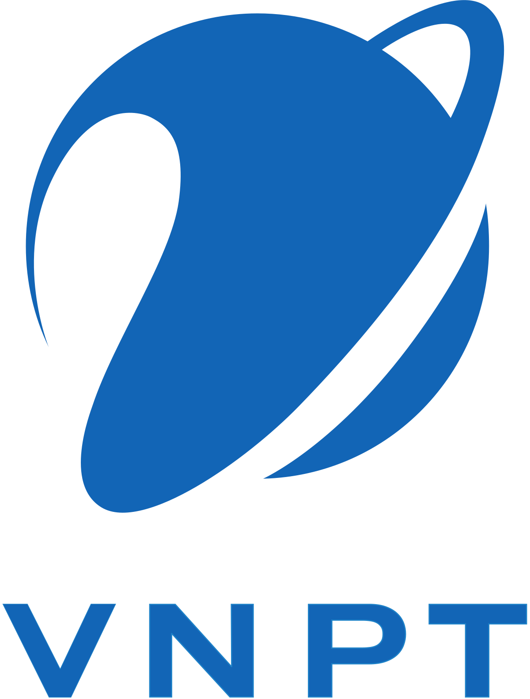

About Me
I am a University of Miami graduate with a degree in Computer Science. I am seeking a full-time position as a Software Engineer where I can contribute to exciting projects and grow my skills.
Feel free to connect with me
Skills
Java
Python
JavaScript
React
Node.js
Experience
Novo - Miami, FL
May 2023 - August 2023
- Developed and maintained 2 live dashboards to monitor and analyze the user reviews from the company’s iOS and Android apps, leveraging Python’s Hugging Face's Transformer models for NLP and Dash for data visualization
- Implemented autonomous deployment for sentiment analysis dashboards using Cron Job to ensure seamless and timely updates, resulting in a 20% user engagement increase
- Engineered 2 web scraping data pipelines for a chatbot employing Beautiful Soup and Scapy, optimizing data extraction through strategic API calls and structured parsing
- Fine-tuned data for the OpenAI API, enhancing chatbot accuracy and reliability by aligning the pre-trained model with specific data nuances, resulting in improved performance

Software Developer
Institute for Data Science and Computing - Miami, FL
January 2023 - May 2023
- Created a digital twin of a slit lamp in extended reality using Unity and C# to aid the training of medical students
- Iteratively refined the model through collaboration with cross-functional teams, ensuring alignment with medical training objectives and design principles while maintaining the integrity of the product architecture
- Leveraged Agile practices to inform the client of product progress and address potential blockers promptly

Teaching Assistant
University of Miami - Miami, FL
August 2022 - May 2024
- Led review sessions and provided 1:1 feedback for 25+ students classes
- Assessed papers and coding assignments, speeding up the instructor's grading
- Courses: Computer Organization & Architecture, Data Structures & Algorithms
Website Developer
Google Developer Student Club
September 2022 - May 2023
- Created a dedicated site for the University of Miami Hackathon and updated the university's webpage in a team of 4, improving user experience using HTML/CSS, JavaScript, and Bootstrap
- dscumiami.com/
University of Miami
March 2022 - August 2022
- Investigated adversarial training of deep networks as well as the relationship between neural networks’ linear nature and their vulnerability to adversarial perturbations
- Utilized PyTorch and TensorFlow to develop a model with high recall that is resistant to adversarial examples

Machine Learning Intern
VNPT (Vietnam Posts and Telecommunications) - Hanoi, Vietnam
April 2021 - July 2021
- Collaborated with the software team to develop a facial recognition device and improve its interaction with users
- Researched and designed different deep learning algorithms and neural networks for accuracy enhancement
Camner Center for Academic Resources – Miami, FL
October 2021 – May 2024
- Conducted 15 weekly one-on-one tutoring sessions for students in math and computer science
- Provided strategic plans and academic consultation for students to achieve their goals
- Certifications: International Tutor Training Program Certification Level 1 and 2
Projects
Predictive Modeling in Sports Betting | Machine Learning
- Skills: Python, R, Machine Learning, Stastical Learning, ETL
- Built a Python data pipeline to gather a robust dataset; performed data preprocessing and feature engineering
- Utilized ML models in R to predict soccer match outcomes, showcasing significant predictors that boost model accuracy
Time Capsules | Full-stack Web Development
- Skills: React, Redux, Express JS, Node JS, MongoDB
- Created a website that allows users to share visual memories and build social connections with friends
Music and Mental Health Analysis | Data Analysis and Machine Learning
- Skills: Python, Scikit-learn, Data Analysis, Data Visualization
- Analyzed the relationship between music genres and mental health using various Scikit-learn models
- Applied frameworks and statistical models in Python to perform data cleaning, training, and visualization tasks